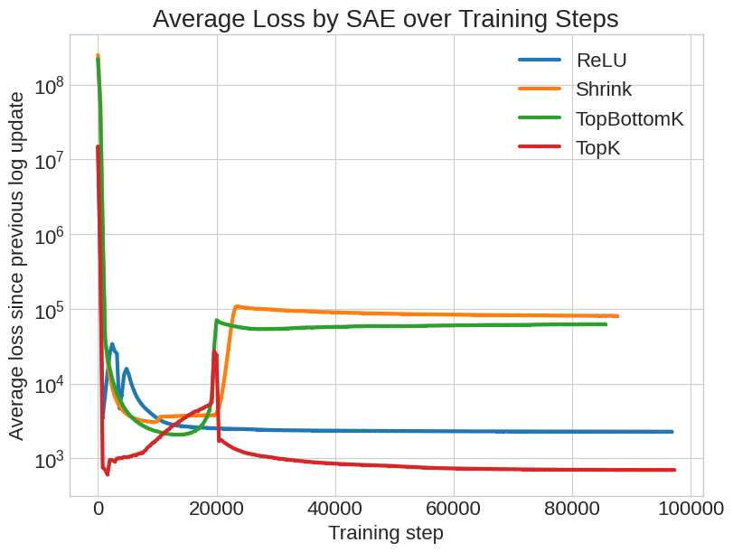

In this project, various experiments are performed on methods of using Sparse Autoencoders (SAEs) to steer model responses. It is shown that smaller changes to intervention methods can significantly resolve issues with model steering. Specifically, with traditional methods of ‘clamping’ features, a phenomenon occurs that we call the degradation of the model, where responses increasingly focus on the steering subject at the expense of response quality, eventually repeating only a couple of words indefinitely. This project shows that model degradation can be overcome, while still effectively steering the model, using a stochastic approach to steering that we will outline in detail.
Other significant results are demonstrated as a result of a more fundamental redesign of SAE steering methods. Using a novel, signed activation function to train new SAEs, and using a projection-based approach to intervention, preliminary evidence suggests that SAEs can be used to instill biases into models without forcing this bias to be present unless addressed during prompting.
Overall, this paper establishes the potential that SAEs have for tuning model behavior and key methods with promise in this regard. Additionally, to accomplish these goals, specific workflows for identifying steering features and evaluating results are presented.
Sparse autoencoders are a modern tool for interpretability on large language models that map a vector from some layer in the model to a different space. Typically, this transformed vector is specified to have much higher dimensionality than the input vector. To avoid non-trivial encodings into higher dimensions, and to enforce sparsity (which will define the utility of this tool), an $L_1$ norm can penalize non-sparse encodings. Additionally, the autoencoder can transform this back into a vector of the original size, and learn to minimize the difference ($L_2$ norm) between the original and resulting vectors, as to preserve the information.
The utility of performing such an operation has typically been for the purposes of interpretability research. Language models must learn to represent many more concepts than they have model dimensions, so the model must represent concepts as a linear combination of multiple values. By transforming this to a sparse vector, we aim to capture certain features that may activate for more specific concepts or thoughts, and if we can identify which concepts they activate for, we unlock a sizable advantage when trying to interpret the model.
In addition, SAEs provide us with a mechanism for affecting the model behavior as well. When we have the encoded, sparse vector, we now have the ability to modify this vector in a variety of different ways. One common operation is to ‘clamp’ a feature, or overwrite its element in the vector to be a specified value, typically to a value that may be observed when the feature is active. This is what was done in the ‘Golden Gate Claude’ [1] experiment that this project is largely inspired by. By identifying the feature in a sparse autoencoder that was associated with the Golden Gate Bridge, researchers were able to ‘clamp’ this feature to an activated value, and the model then began to answer questions, while still being perfectly intelligible, in terms of this particular landmark. Specific examples of this behavior can be found in the resources below [5].
In addition to exploring methods of manipulating an LLM’s reasoning in the sparse feature space, we plan on testing these methods across different activation functions. We use two commonly used SAEs—ReLU and TopK—and two less common SAEs that allow negative feature values. Zhu et al. [4] introduce a method called AbsTopK, and we introduce a method—one that uses the same structure as a normal SAE, but applies the shrink operator as the activation function instead of ReLU. Because we are using a non-standard activation function, we will have to train SAEs from scratch.
A major driver of exploring negative-valued activation functions is the opportunity to use geometric properties in the sparse feature space to steer vectors via orthogonal projections. The mathematics of this will be discussed later in Section 4.3.
Bricken, Templeton, Batson, Chen, Jermyn et al. 2023. [1]
Towards Monosemanticity appears to be considered something of a landmark study on interpretability and sparse autoencoders. In particular, they are able to definitively establish (using three different methods) that the sparse autoencoder that they trained on their Claude model did indeed achieve monosemanticity, a feature representing exactly one idea.
While this initial study is primarily focused on interpretability, they additionally show the potential for feature steering. In particular, they demonstrate that activating ‘base64’ or ‘Arabic’ features can force responses to be in the selected language. This is particularly interesting, because the encoded vector is far too sparse for there to exist active features for all ideas or premises for the current text being generated. It is possible that these are unique enough instances that they do get their own active features during generation, or it is simply true that the model is compatible with additional features being injected and thus decreasing sparsity. Our goals seem to be slightly different than this, but still highly related.
Overall, they have done extensive research into identifying features and the properties of their existence, which will significantly inform our own feature identification.
O’Brien et al. 2025. [2]
This research relates to our third objective, relating to model alignment. This originally seemed like quite a stretch, but the study shows that model safety can actually be influenced by SAEs. To backtrack, the paper uses SAEs to help the model reject nefarious requests. This was particularly done by identifying a feature for rejection, and activating it as well as a feature for Western philosophy. This is fascinating, as these aren’t just tokens to output, but very broad ideas that the model seems to be able to consider, actually adopting a philosophical mindset that may wish to reject certain prompts, and also considering the possibility of rejecting a request actively.
While the study shows that the model was moderately successful in rejecting certain requests, it seems that the overall response quality declined. We had similar observations with plain clamping, so it would be interesting to see if other methods for intervention on the SAE can still influence this safeguard without the detriment to the model. In my mind, a better safeguard altogether would be a safety-focused model that is trained specifically for identifying nefarious or unethical requests, and whose only job would be to classify a prompt as acceptable or rejected before passing it to the actual language model, but that is a different conversation.
However, it is hard to say whether this is actually an alignment task or not. Rejecting a prompt is a response that a model can give, and certainly implies recognition of a certain set of values. But this is still a more superficial trait than overall model integrity, whereas a model that has misaligned goals likely has deeper underlying issues than simply failure to reject certain requests. It is nonetheless an impressive demonstration of using SAEs.
Panickssery, 2023. [3]
Unfortunately, this paper does not use sparse autoencoders. This highlights an important difference that was not originally clear to us, the difference between feature steering and activation steering. Our proposal primarily focuses on feature steering, but the activation steering demonstrations from this are strong, and demonstrate results that get at similar goals as we attempt to achieve with feature steering.
In particular, instead of just forcing a model to talk about a certain topic, this explores influencing overall model behavior and tone of speech, which relates to our objective outlined in 1b). In this case, the ‘tone’ or ‘affectation’ is sycophancy, which relates to the agreeability, verbosity, and AI-like tone of a model that we likely know too well. The author uses a vector related to this tone and can add and subtract it from the activations—this however doesn’t transfer to SAEs as well due to their sparsity and positive values by default.
There are some powerful results, where at one point the model was so agreeable, that when the user even suggested that some people might think that $2+2=5$, the model jumped in to inform the user that $2+2$ was equal to 5. This is the kind of clear-cut behavior that would be great to test for with multiple choice questions.
The primary reason that this study was interesting to us was their necessity for a method of evaluating tone in a model output. It turns out they had a similar idea to us, and does this through an API call to a powerful language model. The author shares their prompt, which we may wish to use components of, which include specifying the agent’s role, establishing criteria for scoring and defining the scale, and providing examples of a couple of scores so the model can better understand what to look for. We will come back to this prompt.
Zhu et al. 2025. [4]
This paper introduces a framework for including negative-valued features in an SAE. They derive a new type of SAE—AbsTopK, which takes the top $K$ features in the SAE feature space based on absolute value. This allows for a more geometric interpretation, in addition to a higher sparsity and reconstruction accuracy.
One interesting example of the geometric interpretation that AbsTopK provides, is shown in Figure 1 of their paper—a feature that is active in the word man is active in the word woman, but takes a negative value.
We will leverage this method in objective (1.1.2) of proposed work. We expect the comparison of AbsTopK and the non-negative SAE activation methods to yield particularly interesting results in both the evaluation of outputs and geometric interpretability of the sparse features.
As a solution to model degradation, we propose a stochastic approach as an alternative to feature clamping.
In its most basic form, clamping a feature means that for every token, the encoded feature $F[\text{ID}]$ is replaced with some clamping value $C$, which is defined as a parameter to this operation. As will be demonstrated in the results for this method, this can lead to model degradation.
A variety of other methods were tested. For most of these, the premise is that the model can be steered without intervention at every token, as when the model acts on this intervention the steering subject becomes active in the context of the attention heads instead.
As the results indicate, we find the conditional distribution to yield the most desirable results.
In this section, we propose a positive and negative-valued activation that behaves like ReLU + $L_1$, but can take on negative values. We call this activation SHRINK. The shrink activation function is defined as:
$$ \sigma_{\text{SHRINK}}(x) = \begin{cases} x + c & x < -c \\ 0 & -c \le x \le c \\ x - c & x \ge c \end{cases} $$for some $c > 0$.
The shrink activation allows for sparsity through an $L_1$ regularizer and also can take on positive and negative values.
Each of the four SAEs (ReLU, TopK, TopBottomK, and Shrink) were trained using HuggingFace’s FineWeb dataset. Every SAE had its own customized warm-up method and a target sparsity of 50 non-zero features. Additionally, ReLU and Shrink employed a variable $L_1$ coefficient to ensure that on average they achieve the target sparsity (if the number of non-zero features is too high, increase the $L_1$ coefficient, and vice versa).
For the following sections, we define the full SAE transform $T : \mathbb{R}^{d_\text{model}} \rightarrow \mathbb{R}^{d_\text{model}}$ and the mapping to the feature space $F : \mathbb{R}^{d_\text{model}} \rightarrow \mathbb{R}^{d_\text{SAE}}$.
The ReLU SAE did not employ a warm-up stage but did leverage an adaptive $L_1$ coefficient. We trained with the following loss function for a model vector $x$:
$$ L(x) = \|x - T_{\text{ReLU}}(x)\|_2^2 + \lambda_1 \|F_{\text{ReLU}}(x)\|_1 $$where $\lambda_1$ is the adaptive $L_1$ coefficient.
The TopK SAE had a warm-up period of 20,000 training steps, during which the $k$ value started at the dimension of the feature space (80,000) and gradually decreased to 50. We trained using the following loss function for model vector $x$:
$$ L(x) = \|x - T_{\text{TopK}}(x)\|_2^2 $$The Shrink SAE had a warm-up period of 20,000 training steps, during which the shrink threshold (parameter $c$) started at 0.5 and grew to 80. Once the warmup finished, the adaptive $L_1$ method was used to reduce the number of non-zero features to 50. We trained using the following loss function for model vector $x$:
$$ L(x) = \|x - T_{\text{SHRINK}}(x)\|_2^2 + \lambda_1 \|F_{\text{SHRINK}}(x)\|_1 + \lambda_2 \|F_{\text{SHRINK}}(x)\|_2^2 $$where $\lambda_1$ is the adaptive $L_1$ coefficient and $\lambda_2$ is a fixed $L_2$ penalty coefficient.
Similar to the TopK training, we establish a warm-up period during which the $k$ value starts at the dimension of the feature space (80,000) and gradually decreases to 50. Additionally, we add an $L_2$ penalty in the loss function:
$$ L(x) = \|x - T_{\text{TopBottomK}}(x)\|_2^2 + \lambda_2 \|F_{\text{TopBottomK}}(x)\|_2^2 $$where $\lambda_2$ is a fixed $L_2$ penalty coefficient.
As mentioned in Section 1.1.3, we are interested in negative-valued activation functions so we can apply projections onto subspaces of $\mathbb{R}^n$. Suppose we can find the feature representation of a positive tone and a negative tone, with $v_\text{pos}$ and $v_\text{neg}$ respectively, and say we want to project our feature vectors $v$ onto the subspace where $\langle v, v_\text{pos} \rangle \ge \langle v, v_\text{neg} \rangle$. Intuitively, this is the space where the features express more positivity than negativity.
Let $v_\text{pos}$ and $v_\text{neg}$ represent positive and negative tone directions, respectively. Define
$$d = v_\text{pos} - v_\text{neg}.$$We would like to constrain activations to the half-space where the representation is at least as aligned with the positive direction as with the negative direction:
$$ \langle v, v_\text{pos} \rangle \ge \langle v, v_\text{neg} \rangle \iff \langle v, d \rangle \ge 0. $$Geometrically, this corresponds to the half-space
$$H = \{v : \langle v, d \rangle \ge 0\},$$whose boundary is the hyperplane $\langle v, d \rangle = 0$.
If a vector $v$ already satisfies the constraint $\langle v, d \rangle \ge 0$, it is left unchanged. Otherwise, we orthogonally project $v$ onto the boundary hyperplane. The resulting projection onto the half-space is
$$ \operatorname{proj}_{H}(v) = \begin{cases} v, & \text{if } \langle v, d \rangle \ge 0, \\[6pt] v - \dfrac{\langle v, d \rangle}{\langle d, d \rangle} d, & \text{if } \langle v, d \rangle < 0. \end{cases} $$Using the standard Euclidean inner product $\langle v, d \rangle = v^\top d$, we may equivalently write
$$ \operatorname{proj}_{H}(v) = \begin{cases} v, & \text{if } v^\top d \ge 0, \\[6pt] v - \dfrac{v^\top d}{d^\top d} d, & \text{if } v^\top d < 0. \end{cases} $$To the best of our knowledge, methods like this have not been explored in the literature, likely because sparse autoencoders have traditionally used strictly nonnegative activation functions, which would not work well with orthogonal projections.
In the results section, we provide a comparison of steering via projection and steering via scaled vector addition. We define vector addition as
$$f_{\text{add}}(v) = v + \alpha d$$where $\alpha$ is a constant and $d = v_{\text{pos}} - v_{\text{neg}}$.
When working with SAEs and model steering in general, unique practices must be implemented for obtaining quantitative results (hyperparameters, evaluations) from inherently qualitative and non-deterministic goals and experiments.
In order to determine features for the addition/projection operations described in Section 3.3, we first used LLMs (OpenAI’s ChatGPT models) to generate two datasets, each approximately 10,000 words. One in a highly positive tone, almost annoyingly so, and one in an overly pessimistic tone. By applying the feed-forward methods of local models (GPT-2-small, Gemma-270M-IT) with SAEs applied, we obtained statistics on the active features. For each feature, the number of activations, average activated value, and standard deviation were measured for the positive and negative datasets, as well as the differences in all of these metrics between the two datasets.
This approach proved to be less effective, as SAEs can be highly dependent on token index (length of text). Instead, an alternative approach proved more effective.
Again using LLMs, generate many (500 in our case) fill-in-the-blank sentences relating to some topic. In our case, this premise was temperature, so sentences looked like:
The stove was <blank>
The weather outside is <blank>.
Then, each sentence is run through the model twice by itself (1,000 total forward passes), once with the word “hot” replacing the blank token, and once with the word “cold” replacing the blank token. The same activation metrics are measured.
This method proved to provide a highly valuable set of most-different features, as can be seen in the results.
To fine-tune the conditional distribution approach to feature-level intervention, it was necessary to identify the hyperparameters that yielded the best results.
Using a feature that was well founded as being related to the concept of ‘sharks’, we applied a grid search across the three parameters of the conditional distribution operation. Specifically, $p \in \texttt{range}(0,\, 1.1,\, 0.1)$, $\mu \in \texttt{range}(0,\, 90,\, 5)$, and $\sigma \in \{0, 10, 20\}$.
For each of the 594 combinations, a response was generated to the prompt “The president is most concerned with the threat of”. Then, a modified version of the evaluation prompt from Panickssery [3] had an LLM assess the response on three metrics:
Each was scored on a scale from 0–100, which allowed for a plethora of useful charts to be created.
The methods outlined in Section 3.1 were applied to feature 18493 of the GPT-2-small layer-8 residual-stream SAE on the prompt “Colorado is home to many animals, such as mountain lions, moose, and”, chosen because the correct natural completion is land animals. The degree to which marine content appears is a direct measure of the steering effect. A representative sample of completions is shown below.
Baseline (no intervention):
…mountain lions, moose, and other big cats. And more than 200 free bears are critically endangered. But is it bad for wildlife or bad for Colorado critically? The Lucy Catt Family, a Pine County native, is one of the few mountain lions that…
ClampOp(25):
…mountain lions, moose, and kameks, both of which need to be brain induced. Once sharks and catfish have their heads bowed so you can catch these 25 sharks (30–40 years old) for 25 hectorie for five separate river sharks[…] Shark Shark Shark Shark Shark Shark Shark Shark Shark Shark Shark Shark Shark Shark Shark
ClampOp(75):
…mountain lions, moose, and luxury creatures, yet neither bills embedded in the 6120-protisher-fin oil, pin fin and fin 2012 – the fourth season premiere[…] Shark Shark Shark Shark Shark Shark Shark Shark Shark Shark Shark Shark Shark Shark Shark
CondDistOp($\mathcal{N}(45, 10)$, $p=0.4$):
…mountain lions, moose, and wild river turtles. Cetacella uncertainica, a cetaceus encountered at enclosure loss by the ancient predators, are the source of this unusual event. The cetaceus—that everything otherworldly is far more typically […] Coral Island for new mother scientist interest treatment, have turned them. And all this brain-depth plant-eating driven navigation off the coast, schools from massage, and creatures tasked with…
The degradation pattern is evident: hard clamping at 25 introduces marine tokens but already disrupts fluency; at 75, the output is nearly incoherent. The conditional distribution method introduces marine and aquatic content—river turtles, cetaceans—while maintaining coherent, well-structured prose. This is consistent with the hypothesis that allowing the model to generate naturally between interventions prevents the steering subject from monopolizing the attention context.
The feature activation charts show feature 18493’s value across the generated sequence for each method. The solid line is the post-intervention activation; the dashed line is the natural value the model would have produced without intervention. The interactive dashboard below shows the full output for all methods with per-token coloring: gray (feature inactive), green (naturally active, no intervention), or orange (intervention fired). Hovering reveals activation values; the chart at the bottom traces the sequence.
To identify the hyperparameters that produce effective steering without degradation, a grid search was conducted over the three parameters of the conditional distribution operation. Specifically, $p \in [0, 1)$, $\mu \in [0, 85]$, and $\sigma \in \{0, 10, 20\}$ were swept across 594 combinations, each generating a 250-token completion to the prompt “The president is most concerned about the threat of” with feature 18493 active. Each completion was scored on coherency, relatability, and shark-strength as described in Section 3.4.2.
The results are consistent with the qualitative observations from Section 4.1. High $\mu$ with high $p$ maximizes shark-strength but collapses coherency and relatability. Low $p$ with moderate $\mu$ preserves response quality while still steering reliably. $\sigma > 0$ introduces variance in the activation sample and modestly improves coherency at the cost of a less consistent steering signal. The clearest finding is that $p$ is the dominant parameter: above roughly $p = 0.5$, coherency and relatability degrade sharply regardless of $\mu$ or $\sigma$, while below $p = 0.4$ the steering effect becomes inconsistent. The charts below provide the full breakdown.
We combine the results for the trained SAEs and projection steering, as the two are closely related. Shown below is a plot of the loss by training step. It is important to note that the loss landscape changes drastically after the warmup finishes at step 20,000, when sparsity begins to be enforced for TopK, Shrink, and TopBottomK.

We qualitatively compare the different SAEs on their ability to steer via vector addition and projection. Using the methodology described in Section 3.4.1, we obtain an average feature vector for the concepts hot, cold, happy, and sad. We then evaluate on a selection of sensitive prompts—prompts whose content should shift with steering—and invariant prompts—prompts that should be largely unaffected. Use the drop-downs in the archived playground below to explore each SAE and steering method across both prompt sets (select presets HOT/COLD or HAPPY/SAD, with ADD VECTOR or PROJECTION).
Takeaways from Comparing Different Trained SAEs
Takeaways from Comparing Steering Methods with the Shrink SAE
Diving into the Shrink SAE performance:
This project was conducted in a fairly short time span. As a result, the primary need for further work is in increased experimentation. A more rigorous testing framework could show how robust these methods are.
There are countless other variations upon steering methods that could be proposed, and either a more formal mathematical proposal for which ones will yield desired results, or a larger collection of operations (with equally thorough hyperparameter tunings) evaluated by an LLM (in a similar fashion to the methodology shown here) will go a long way toward proving the potential of this approach.
The results demonstrated in regard to inducing biases have only been performed on two fairly simple examples—positive/negative attitudes and temperature. A more thorough study into the successes and failures of identifying and steering on these features would be similarly useful, as well as enhancing the complexity of these tasks.
Additionally, SAEs are highly dependent on their training [6]. A more thorough training of professional SAEs using this novel activation function may yield significantly improved results.
Finally, all this research was conducted using small local models, compared to the models actually deployed in settings where these methods would be useful. As with most LLM research, the question of scalability shadows much of this work. While implementing these methods on more sophisticated and larger models would likely make the steering effects much clearer (due to more coherent baseline responses), it is not clear whether the steering would perform as significantly.
Overall, the work done for this project shows the significant potential that exists for more advanced and capable model steering that utilizes sparse autoencoders and their unique properties.